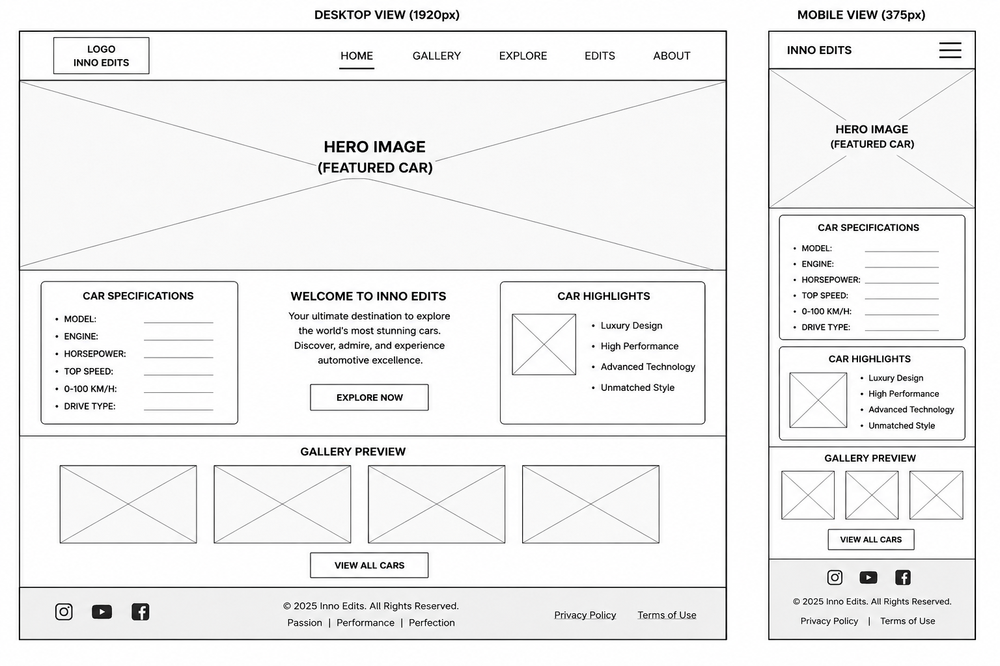

Website Planning Document
Site Name
Inno Edits – Cinematic Car Showcase
This name was selected because it represents a creative brand focused on high-quality, cinematic presentations of cars. “Inno Edits” reflects innovation and editing creativity, while the title highlights the main focus of showcasing cars in a visually appealing way.
Site Purpose
The website will showcase a variety of cars including sports and luxury vehicles with a cinematic and modern presentation. It will provide information about car design, features, and performance. The site will also include a gallery for visual exploration and a bonus page that displays edited car videos to enhance user experience.
Scenarios
- What are some of the best-looking sports and luxury cars to explore?
- Where can I view cinematic visuals or edited videos of different cars?
Color Scheme
- Black (#0d0d0d): Used for the main background to create a cinematic and luxury feel.
- Red (#e63946): Used for headings, accents, and highlights to create contrast and visual impact.
- Light Gray (#f5f5f5): Used for text to ensure readability.
Typography
- Playfair Display: Used for headings to give a luxury and cinematic style.
- Roboto: Used for body text for readability and simplicity.
Wireframe
Wireframe Diagram

Mobile View
[LOGO]
[MENU]
[HERO IMAGE]
[INTRO TEXT]
[FEATURED CAR]
[FOOTER]
Desktop View
[LOGO] [NAVIGATION MENU]
[HERO IMAGE - FULL WIDTH]
[INTRO TEXT]
[CAR GALLERY GRID]
[FEATURED SECTION]
[FOOTER]